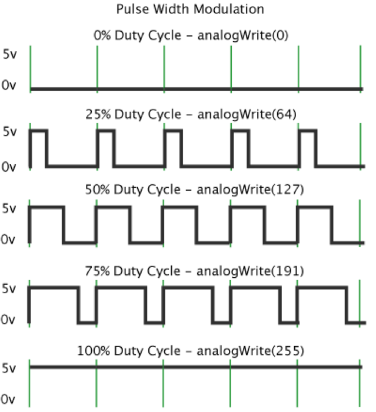
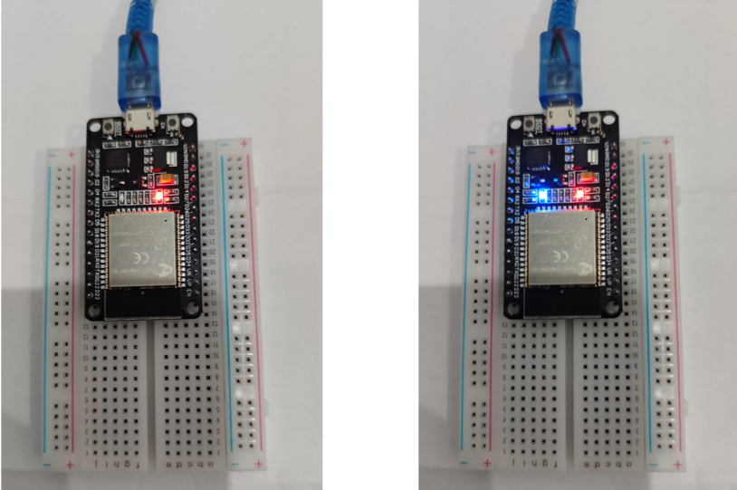

Pertemuan ke 11 : Praktik Pemrograman Microcontroller
Topik Bahasan
Proyek Dasar Internet of Things I (Praktik Pemrograman Mikrokontroler, Praktik Sensor: Sensor DHT11, LCD dan Kipas, Praktik Sensor: Ultrasonic, PIR, dan LDR, Praktik Aktuator: LED dan Relay, Praktik Aktuator: Buzzer dan Servo)
Deskripsi
- Mampu melakukan instalasi, memahami bahasa pemrograman dan pin pada Arduino.
- Mampu melakukan uji coba serial monitor dan uji coba PWM dengan potensiometer.
- Mampu merancang dan membuat proyek menggunakan sensor DHT22.
- Mampu merancang dan membuat proyek menggunakan sensor Ultrasonic, PIR, dan LDR.
- Mampu merancang dan membuat proyek menggunakan aktuator LED dan Relay.
- Mampu merancang dan membuat proyek menggunakan aktuator Buzzer dan Servo.
Teori Singkat
Arduino memiliki pin yang dapat bekerja sesuai dengan fungsinya. Pin pada Arduino dikelompokkan menjadi Pin Analog dan Pin Digital.
Pin Analog terdapat pada A0 – A5 yang digunakan untuk menghubungkan dengan sensor analog seperti LDR, potensiometer, sensor kelembaban tanah, dll.
Pin Digital terdapat pada pin 0 – 13 yang digunakan untuk input/output digital. Contoh input digital: Sensor DHT22, Sensor PIR, Sensor ultrasonik, dll.
Contoh output digital: LED, relay, Servo, dll.

PWM (Pulse Width Modulation) PWM merupakan suatu teknik modulasi yang mengubah lebar pulsa (pulse width) dengan nilai frekuensi dan amplitudo yang tetap.
PWM dapat dianggap sebagai kebalikan dari ADC (Analog to Digital Converter) yang dapat mengkonversi sinyal Analog ke Digital, PWM ini digunakan untuk menghasilkan sinyal analog dari perangkat Digital (contohnya dari Mikrokontroller). Sehingga keluaran tegangan (ouput) dari mikrokontroler dapat diatur.

Penggunaan PWM (Pulse Width Modulation) PWM biasa digunakan untuk:
- Mengatur kecerahan LED
- Mengatur kecepatan motor DC
- Menggunakan motor servo
- Mengatur sistem pemanas
- Mengatur kecepatan pompa
- Telekomunikasi

Pin Arduino PWM (Pulse Width Modulation) Tidak semua pin Arduino mendukung PWM karena memerlukan kompatibilitas dengan IC mikrokontroler tersebut.
Pin PWM Arduino dituliskan dengan simbol ~ disamping nomor pin, diantaranya 3, 5, 6, 9, 10, 11.

Praktikum 1: Praktik Pulse Width Modulation(PWM) pada Arduino Output Berdasarkan Input Analog
Selesaikan langkah-langkah praktikum berikut ini menggunakan Tinkercad di browser Anda.
- Login dengan akun yang sudah dibuat.
- Klik Design, Circuit
- Klik Create New Circuit untuk membuat rangkaian baru.
- Tambahkan Arduino Uno R3 dengan klik Arduino Uno R3 pada bagian Components, lalu klik di bagian simulation space. Tambahkan juga Breadboard Small dan Potensiometer.

Buatlah rangkaian seperti pada gambar. Hubungkan kaki terminal 1 potensiometer dengan 5 volt, kaki wiper potensiometer dengan A0, kaki terminal 2 dengan ground.

Masukkan kode program sesuai dengan gambar dengan klik Code. Ganti mode blocks menjadi mode text.
- Klik Start Simulation untuk memulai simulasi. Klik potensiometer dan ubah dari posisi awal. Klik pada Serial Monitor, maka akan menampilkan nilai PWM sesuai posisi (nilai) potensiometer.

Praktikum 2: Praktik Pulse Width Modulation(PWM) pada Arduino dengan LED
Selesaikan langkah-langkah praktikum berikut ini menggunakan Tinkercad di browser Anda.
- Login dengan akun yang sudah dibuat.
- Klik Design, Circuit
- Klik Create New Circuit untuk membuat rangkaian baru.
- Tambahkan Arduino Uno R3 dengan klik Arduino Uno R3 pada bagian Components, lalu klik di bagian simulation space. Tambahkan juga Breadboard Small, Potensiometer, Resistor dan LED.
- Hubungkan semua seperti gambar.

- Masukkan kode program sesuai dengan gambar dengan klik Code. Ganti mode blocks menjadi mode text.
- Klik Start Simulation untuk memulai simulasi. Klik Potensiometer dan rubah posisinya (merubah nilai). LED akan semakin terang saat nilai potensio berada di kiri. LED semakin redup apabila nilai potensiometer berada di sebelah kanan. Klik Stop Simulation.
Praktikum Instalasi IDE(optional)
Hubungkan board ESP32 ke PC menggunakan kabel USB. Jika driver perangkat tidak terinstal secara otomatis, identifikasi USB-to-UART bridge pada board ESP32 Anda. Cari driver di internet dan install.

Jika di Linux atau macOS cek port dengan perintah berikut.
Download Thonny https://thonny.org/ dan lakukan instalasi.
- Setelah selesai instalasi jalankan Thonny, tampilannya seperti gambar di bawah.
Praktikum Flashing MicroPython Firmware(optional)
- Kunjungi situs micropython dan download firmware esp32 - https://micropython.org/download/ESP32_GENERIC/
- Hubungkan ESP32 board ke computer. Buka Thonny IDE. Tools > Options > Interpreter. Pilih Interpreter yang akan digunakan pada board, pilih COM port kemudian pilih Install or Update Firmware.
- Pilih port sekali lagi. Pilih lokasi firmware yang sudah didownload. Tools > Options > Interpreter. Pilih pengaturan seperti pada gambar dan klik Install.
- Thonny dan board siap digunakan, bisa dicoba dengan ketik help.
Praktikum Dasar Menyalakan dan mematikan LED
- Duplikasi code berikut
- LED nyala dan mati

Praktikum PWM Dim LED dengan Micropython
- Buat skenario seperti gambar
Untuk membuat objek PWM, Anda perlu memasukkan parameter, pin yang terhubung dengannya, frekuensi sinyal, dan siklus kerja.
Frekuensi: Frekuensi dapat berupa nilai antara 0 dan 78125. Frekuensi 5000 Hz dapat digunakan untuk mengontrol kecerahan LED. -Siklus kerja(Duty cycle): Siklus kerja dapat berupa nilai antara 0 dan 1023. Dimana 1023 menunjukkan siklus kerja 100% (kecerahan penuh), dan 0 menunjukkan siklus kerja 0% (LED tidak menyala).
Duplikasi code berikut
from machine import Pin, PWM
from time import sleep
frequency = 5000
led = PWM(Pin(5), frequency)
while True:
for duty_cycle in range(0, 1024):
led.duty(duty_cycle)
sleep(0.005)
- Hasilnya seharusnya led berganti tingkat terangnya. https://www.youtube.com/shorts/FfVE_UA46Eg
Tugas Mandiri
Selesaikan langkah-langkah praktikum berikut ini menggunakan Tinkercad di browser Anda.
Tugas 1
- Tambahkan 1 buah LED. Buatlah program agar nyala kedua LED berlawanan saat potensiometer diubah nilainya.

Tugas 2
- Lakukan seperti tugas 1, dengan mengubah board ke esp32!